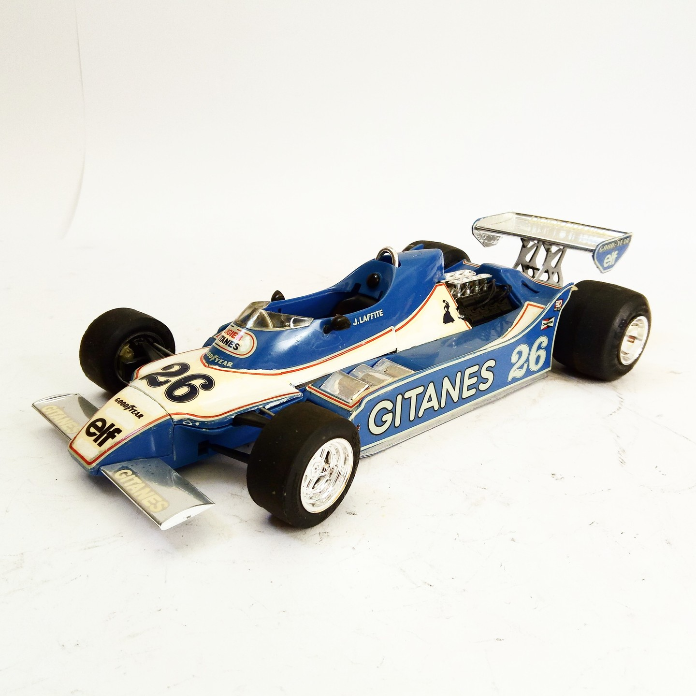

Auto e veicoli stradali · scale model archive
Ligier Ford JS-11 F1
Ligier Ford JS-11 F1 — Kit: Tamiya, Scale: 1/20. As raced in 1979 F1 championship #1/20 #Tamiya

Photo gallery
English description
As raced in 1979 F1 championship
#1/20 #Tamiya
Descrizione italiana
Come corse nel 1979 F1 championship.